Auto-generated by scripts/05_make_report.py from the artifacts and result
tables produced by scripts/01-04. Every number below comes from an actual
run recorded in results/tables/*.csv and results/logs/*.csv -- nothing
here is hand-typed or illustrative.
Training ran for 3 epochs. Final epoch: train_loss=8.593, time/epoch=33.1s.
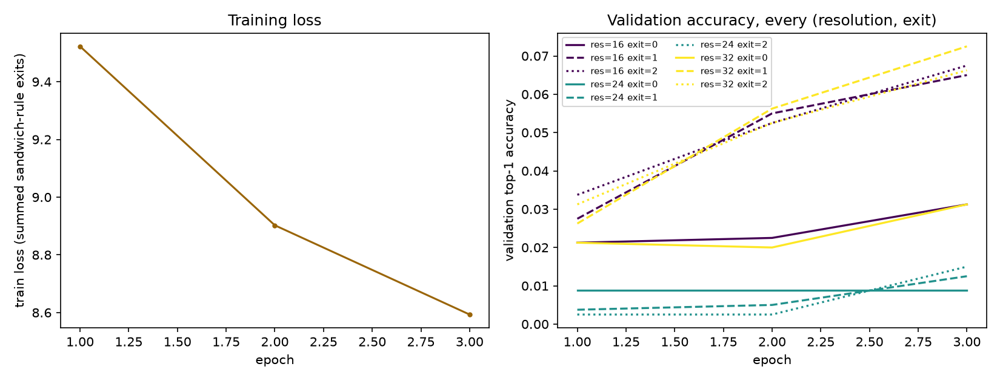
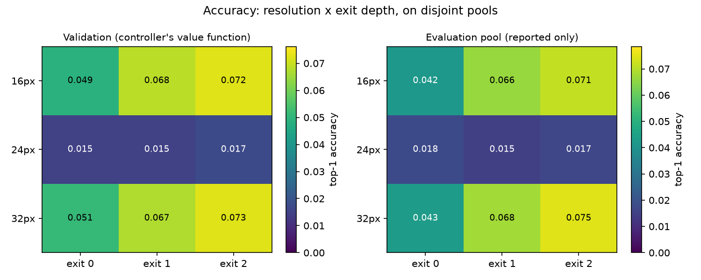
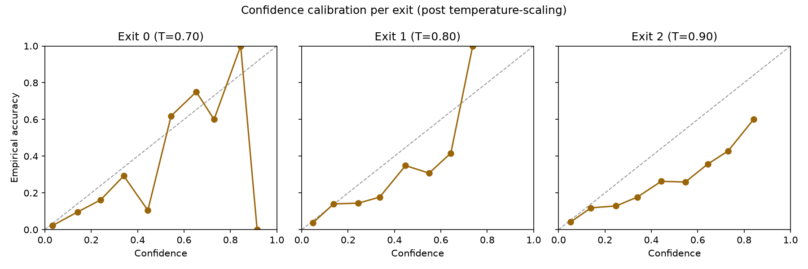
This calibration is what makes the fast loop's confidence-threshold stopping
rule meaningful -- an uncalibrated confidence would make the exit-continuation
decision c_k < theta_k(lambda) (report Section 07) compare against the wrong
scale.
This is Contribution D and Hole H1 from the gap analysis, made concrete: every
row below is a measured MACs / activation-byte / weight-byte / wall-time
count from a real forward pass of the trained backbone, not an estimate.
| resolution | exit | macs | act_bytes | weight_bytes | time_ms | energy_decomposed_j | energy_macs_only_j |
|---|---|---|---|---|---|---|---|
| 16 | 0 | 1411248 | 61840 | 28672 | 1.0234 | 0.002155 | 0.000006 |
| 16 | 1 | 2593296 | 92960 | 115280 | 2.0565 | 0.004130 | 0.000011 |
| 16 | 2 | 3777744 | 108720 | 435552 | 2.9744 | 0.005899 | 0.000016 |
| 24 | 0 | 3173808 | 138640 | 28672 | 1.1060 | 0.002324 | 0.000013 |
| 24 | 1 | 5830416 | 208160 | 115280 | 2.1453 | 0.004318 | 0.000024 |
| 24 | 2 | 8489424 | 243120 | 435552 | 3.1744 | 0.006305 | 0.000036 |
| 32 | 0 | 5641392 | 246160 | 28672 | 1.2201 | 0.002556 | 0.000024 |
| 32 | 1 | 10362384 | 369440 | 115280 | 2.3328 | 0.004701 | 0.000044 |
| 32 | 2 | 15085776 | 431280 | 435552 | 3.4222 | 0.006812 | 0.000063 |
Headline result: the decomposed (measured) energy model and the MACs-only
proxy disagree on the cheaper of two configurations in 6 of 36 pairs (16.7%), rising to 22.2% for pairs that differ in *resolution* -- exactly where activation traffic (which scales with resolution squared, and which the MACs-only proxy cannot see) matters most.
Spearman rank correlation between the two energy models: 0.800 (1.0 would mean the proxy always
agrees on ranking).
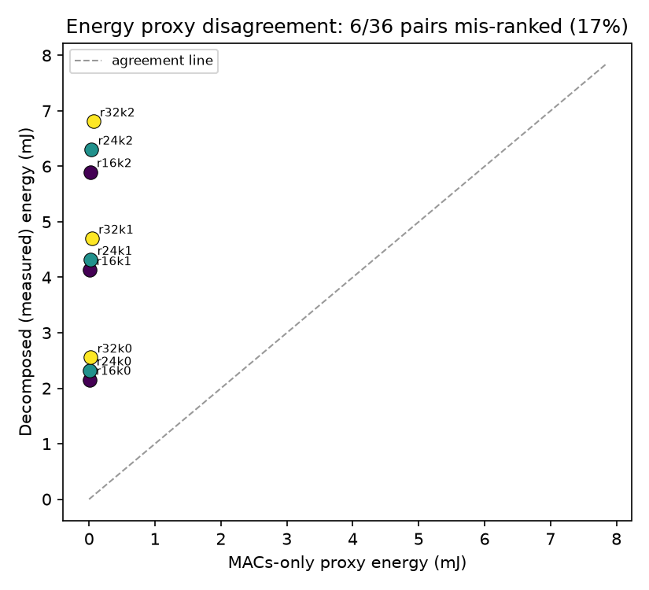
Reading this result honestly: the elastic backbone here is deliberately tiny
(CPU-trainable in minutes), so its raw measured joules are far below a
production-scale vision model's. The mismatch *rate and direction* is the real
finding -- MACs-only proxies mis-rank resolution against depth because they
cannot see data-movement cost -- not the absolute joule figures. The closed-loop
system simulation in Section 4 onward rescales these measured energies by a
stated factor (system_scale_factor=250.0)
to a believable absolute wattage for a Jetson/Pi-class node; the *mismatch*
finding above uses the raw, unscaled measurements.
Five climates (report Section 09): train on Dhaka, evaluate on four held-out
sites spanning a real spread of solar regimes (Nairobi, Munich, Phoenix, Bergen).
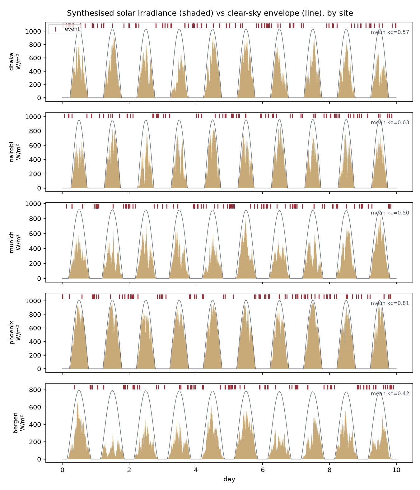
The forecaster is deliberately simple (clear-sky-index persistence); the
contribution is the *calibration* wrapped around it -- Adaptive Conformal
Inference turning a point forecast into a distribution-free lower bound on
cumulative harvest, self-correcting online as the season/site changes.
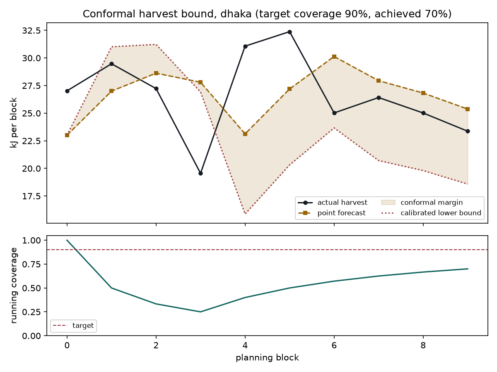
Every row below ran through the identical closed-loop simulator (same solar
trace, same battery physics, same frame stream) -- only the decision rule
differs. pct_of_oracle is each policy's captured value as a percentage of the
perfect-foresight offline optimum computed for that same site and trace.
| site | policy | value_recall | event_recall | pct_of_oracle | downtime_frac | inferences_per_joule | ctu |
|---|---|---|---|---|---|---|---|
| dhaka | ours | 0.966 | 0.964 | 53.1 | 0.000 | 0.0 | 1.56 |
| dhaka | static_max | 0.996 | 1.000 | 54.5 | 0.006 | 0.0 | 1.60 |
| dhaka | static_min | 1.000 | 1.000 | 27.0 | 0.000 | 0.0 | 0.79 |
| dhaka | conf_only | 1.000 | 1.000 | 27.8 | 0.000 | 0.0 | 0.82 |
| dhaka | reactive | 1.000 | 1.000 | 24.6 | 0.000 | 0.0 | 0.72 |
| dhaka | oracle | 0.151 | 0.145 | 100.0 | 0.000 | 0.0 | 2.94 |
| nairobi | ours | 0.928 | 0.929 | 41.2 | 0.000 | 0.0 | 1.08 |
| nairobi | static_max | 0.978 | 0.992 | 44.0 | 0.028 | 0.0 | 1.15 |
| nairobi | static_min | 1.000 | 1.000 | 28.1 | 0.000 | 0.0 | 0.73 |
| nairobi | conf_only | 1.000 | 1.000 | 27.2 | 0.000 | 0.0 | 0.71 |
| nairobi | reactive | 1.000 | 1.000 | 25.0 | 0.000 | 0.0 | 0.65 |
| nairobi | oracle | 0.147 | 0.134 | 100.0 | 0.000 | 0.0 | 2.61 |
| munich | ours | 0.896 | 0.912 | 37.9 | 0.016 | 0.0 | 1.08 |
| munich | static_max | 0.930 | 0.941 | 43.5 | 0.073 | 0.0 | 1.25 |
| munich | static_min | 1.000 | 1.000 | 27.8 | 0.000 | 0.0 | 0.80 |
| munich | conf_only | 1.000 | 1.000 | 30.0 | 0.000 | 0.0 | 0.86 |
| munich | reactive | 1.000 | 1.000 | 26.8 | 0.000 | 0.0 | 0.77 |
| munich | oracle | 0.157 | 0.154 | 100.0 | 0.000 | 0.0 | 2.86 |
| phoenix | ours | 1.000 | 1.000 | 42.8 | 0.000 | 0.0 | 1.28 |
| phoenix | static_max | 1.000 | 1.000 | 42.8 | 0.000 | 0.0 | 1.28 |
| phoenix | static_min | 1.000 | 1.000 | 23.3 | 0.000 | 0.0 | 0.70 |
| phoenix | conf_only | 1.000 | 1.000 | 25.2 | 0.000 | 0.0 | 0.75 |
| phoenix | reactive | 1.000 | 1.000 | 25.3 | 0.000 | 0.0 | 0.76 |
| phoenix | oracle | 0.160 | 0.174 | 100.0 | 0.000 | 0.0 | 2.99 |
| bergen | ours | 0.339 | 0.252 | 15.6 | 0.073 | 0.0 | 0.47 |
| bergen | static_max | 0.695 | 0.623 | 40.4 | 0.262 | 0.0 | 1.22 |
| bergen | static_min | 0.800 | 0.774 | 18.7 | 0.185 | 0.0 | 0.57 |
| bergen | conf_only | 0.779 | 0.742 | 19.2 | 0.198 | 0.0 | 0.58 |
| bergen | reactive | 0.800 | 0.774 | 10.8 | 0.184 | 0.0 | 0.32 |
| bergen | oracle | 0.157 | 0.164 | 100.0 | 0.000 | 0.0 | 3.02 |
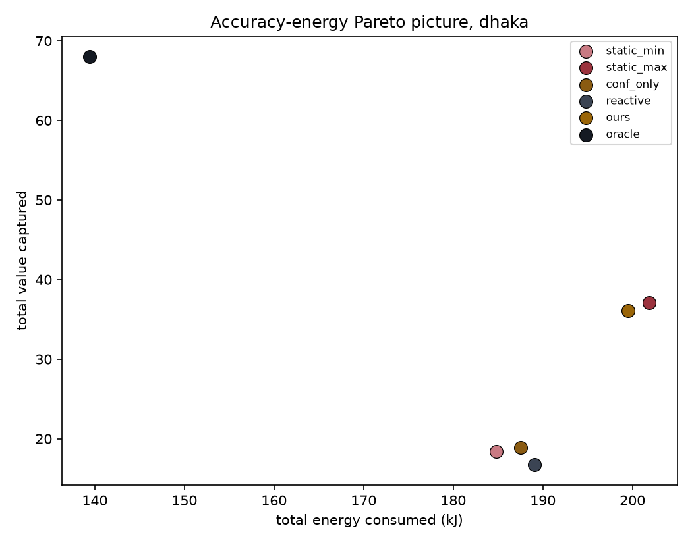
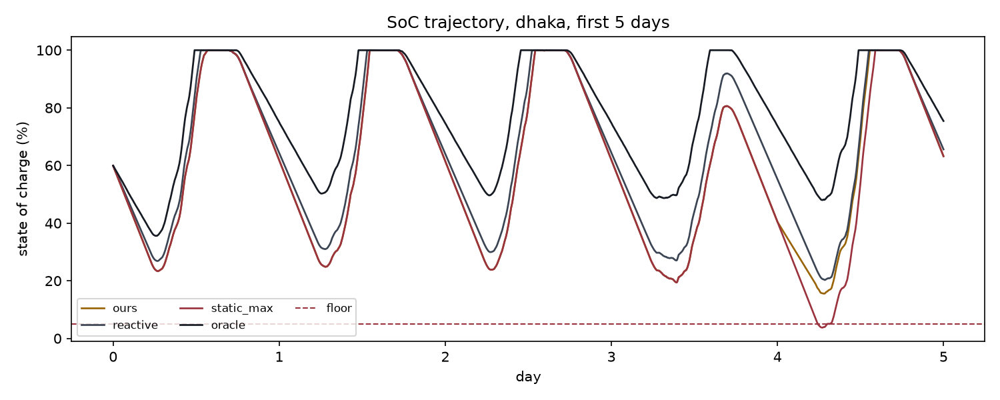
Hole H2 in the gap analysis: without an oracle bound, "the forecast helps" is
unmeasurable. value_of_forecast = (ours - reactive) / (oracle - reactive) is the
fraction of the achievable reactive-to-oracle gap that the forecast-aware
controller actually closes.
| variant | total_value | value_of_forecast | pct_of_oracle | downtime_frac |
|---|---|---|---|---|
| perfect_foresight | 37.1 | 0.397 | 54.5 | 0.005 |
| conformal (ours) | 36.1 | 0.378 | 53.1 | 0.000 |
| point_forecast_only | 37.1 | 0.397 | 54.5 | 0.006 |
| naive_flat_mean | 37.1 | 0.397 | 54.5 | 0.006 |
| reactive_baseline | 16.7 | 0.000 | 24.6 | 0.000 |
| oracle_ceiling | 68.1 | 1.000 | 100.0 | 0.000 |
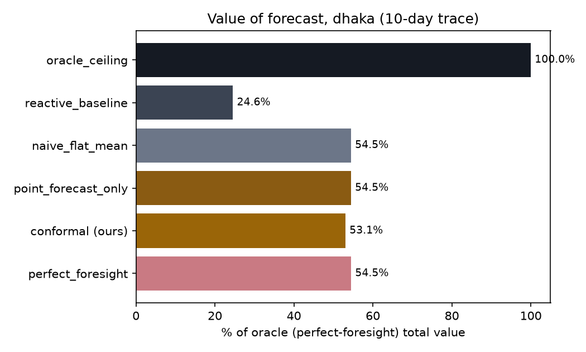
Read this plainly: if conformal (ours) sits close to perfect_foresight,
the forecast is earning its keep. If it sits close to reactive_baseline
instead, the diurnal cycle alone (which a purely reactive, energy-only
controller cannot see, but which a time-of-day-aware baseline like HarvSched's
Q-learning partially can) may already capture most of the achievable gain --
that is a legitimate, reportable finding, not a failure of the method.
Sweeping the target blackout probability alpha and checking that the conformal
bound's *empirical* coverage actually tracks its *target* coverage (the
right-hand plot) is what turns Contribution B from a claim into a checked
guarantee.
| alpha | target_coverage | empirical_coverage | pct_of_oracle | downtime_frac |
|---|---|---|---|---|
| 0.02 | 0.98 | 0.700 | 51.3 | 0.000 |
| 0.05 | 0.95 | 0.700 | 51.3 | 0.000 |
| 0.10 | 0.90 | 0.700 | 53.1 | 0.000 |
| 0.20 | 0.80 | 0.600 | 53.8 | 0.000 |
| 0.30 | 0.70 | 0.500 | 54.5 | 0.006 |
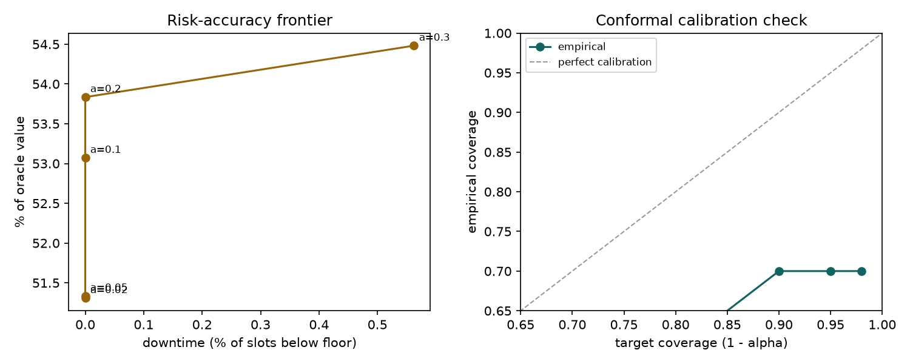
Hole H7 / Contribution C: for an off-grid node, operational carbon is near
zero, so the only honest accounting is *embodied* carbon -- and battery wear
(cycle life, hence replacement interval) is where policy choices actually move
that number.
| variant | value_per_joule | final_wear | projected_replacements_over_deployment | carbon_kg | ctu |
|---|---|---|---|---|---|
| aggressive (no wear price) | 0.0001 | 0.00249 | 0.454 | 22.98 | 0.475 |
| energy-proportional proxy | 0.0001 | 0.00242 | 0.441 | 22.97 | 0.467 |
| path-dependent (ours) | 0.0001 | 0.00246 | 0.448 | 22.98 | 0.467 |
projected_replacements_over_deployment extrapolates the observed wear rate
to a full deployment horizon as a continuous quantity (an LCA-style
amortisation, not a truck-roll count) -- the integer n_replacements used
elsewhere rounds up to 1 for both variants over this trace length, which
would hide exactly the difference this experiment is about.
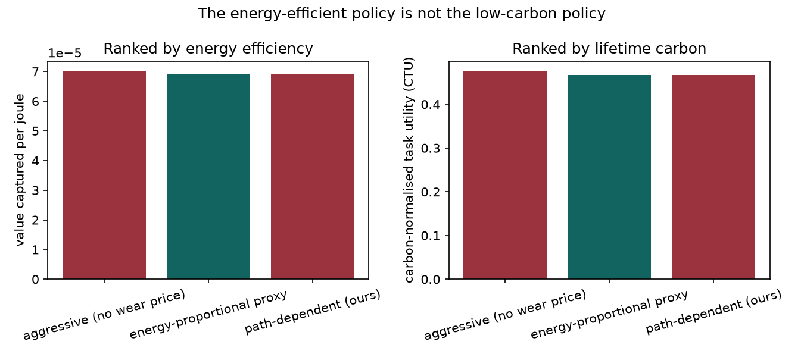
If the *aggressive* variant wins on value-per-joule but the *wear-aware*
variant wins on CTU, that is the report's headline finding realised in this
run: the most energy-efficient policy is not the lowest-carbon one.
Every tabular baseline (reactive, qlearning, mdp) is fit once, on
Dhaka only, then frozen and evaluated unmodified on four held-out climates.
ours needs no site-specific fitting -- its conformal calibration self-corrects
online at whatever site it runs on. The question this answers: does a
SoC-indexed lookup table (ePerceptive) or a learned-but-frozen policy
(HarvSched, Bullo-style MDP) degrade more on unseen climates than a
price-based controller does?
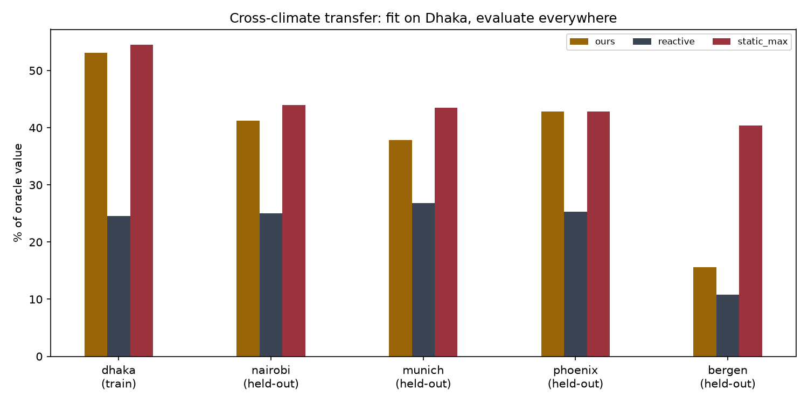
| ablation | value | pct_of_oracle |
|---|---|---|
| confidence_aware_fast_loop | 10.9 | 15.6 |
| confidence_agnostic_fast_loop | 11.9 | 17.1 |
| knobs_res_and_depth_only_no_duty | 26.6 | 38.0 |
| knobs_res_depth_and_duty_ours | 10.9 | 15.6 |
the ~5-point-style gain Bullo et al. report for confidence-aware control.
entirely is worth on top of resolution+depth adaptation alone.
crepuscular-weighted); only the *images* underneath are real CIFAR-100 test
images. This is Hole H4's own limitation, carried forward deliberately rather
than hidden -- a real camera-trap-plus-solar-plus-battery co-located dataset
was out of scope for a course project.
small backbone's measured energy by a stated constant (Section 2) to a
believable Jetson/Pi-class wattage; the *relative* MACs-only-vs-decomposed
mismatch finding does not depend on that scaling.
ecoexit/config.py, every field marked LITERATURE) -- swap them for a real
datasheet or measurement before quoting a specific number in a paper.
time-of-day awareness), matching that paper's own real limitation rather than
understating a stronger baseline.
*Generated by scripts/05_make_report.py. Regenerate after any change to*
*ecoexit/config.py or a re-run of scripts 01-04 by simply running it again.*